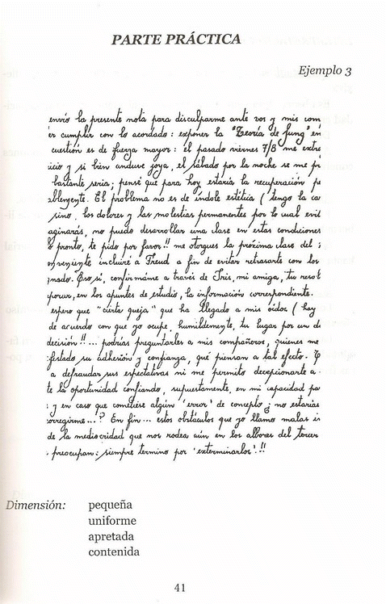
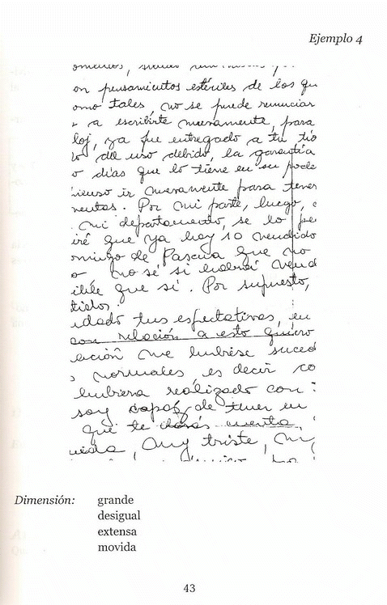

| |

Dimensión
......Dimensión:
Longitud, área o volumen de una línea, una superficie
o un cuerpo, respectivamente.
......Extensión de un objeto en
dirección determinada.
......En
grafología: Es el tamaño de las letras.
......Psicológicamente:
la dimensión de una escritura determina el nivel de
autoestima y el impulso vital. Esto se incrementa con el tamaño: a
mas tamaño, más autoestima.
......Por eso, vamos a tener en cuenta
la dimensión de la letra sobre la base de los siguientes módulos:
.......Altura:
entre 2,5 y 3 mm
......Mayúsculas: entre 9 y 11
mm.
......Hampas y jambas: entre 7
y 9 mm.
......Anchura: 80% de la altura
de una escritura determinada
...De acuerdo con
estos parámetros nos podemos encontrar con los siguientes tipos de
escritura: |
|
| |
Grande
Que excede a lo común y regular. |
.. |
Pequeña
Limitada, corta, ..breve.
Fig.: baja, abatida, humilde. |
.. |
Mediana
De calidad intermedia; moderada. Ni muy grande,
..ni muy pequeña.
|
|
| |
En grafología
Zona media de mas de 3mm. Hampas , jambas y mayúsculas sobrepasan
el módulo. |
|
En grafología
Zona media inferior ..a 2,5mm. Hampas y
.jambas .
pueden tener altura normal o superiror a la normal. |
|
En grafología
Guarda relación con el módulo. |
|
| |
Interpretación
psicológica
Intelectual: amplitud de ideas,
globalización, dispersión, subjetividad en los juicios.
Imaginación viva, fantasía, creatividad, menor.capacidad
de reflexión. |
|
Interpretación
.psicológica
Intelectual: análisis, síntesis, reflexión,
concentración, objetividad en los .juicios.
Observación, capacidad crítica.
No tiene amplitud de ideas.
|
|
Interpretación
.psicológica
Intelectual: claridad de espíritu,
capacidad para realizar y organizar con
un cierto equilibrio. |
|
| |
Afectiva: dinamismo,
optimismo, seguridad, orgullo, necesidad de expansión, amplitud de
necesidades.
Sobrevaloración de si mismo. Exhibicionismo, ambición desmedida,
hace y despues piensa. |
|
Afectiva: sencillez,
docilidad, minuciosidad,
presición, timidez, inseguridad, temor, limitación en la capacidad
de hacer. Piensa y luego hace. Pesimismo.
Le cuesta iniciar cosas nuevas. |
|
Afectiva:armonía,
equilibrio, emprendimiento, serenidad. Analiza la situación y
después hace. |
|
| |
Social:
extraversión,
expresividad, generosidad. |
|
Social:
introversión,
respeto, inhibición para
el contacto social. |
|
Social: buena
adaptación. Relación social normal. |
|
| |
Sobrealzada
Sobre: encima.
Alzada de alzar: Levantar. Elevar sobre una superficie o plano.
Sobresalir.
|
|
Rebajada
De rebajar: hacer más bajo el nivel o superficie
horizontal de un terreno u otra cosa, humillar, abatir.
|
|
| |
En grafología
Se observa una elevación desproporcionada de
ciertas letras o partes de letras. |
|
En grafología
En esta escritura las hampas u jambas son cortas, poco salientes,
como también las mayúsculas.
Puntuación, barras de "t", y acentos bajos. Escritura más ancha que
alta, predominio de la zona media.
|
|
| |
Interpretación psicológica
Intelectual: sobrevaloración intelectual,
buen nivel, fantasía, creación, imaginación, espiritualidad.
Déficit en el criterio de realidad.
|
|
Interpretación psicológica
Intelectual: menor
desarrollo de la parte intelectual.
Menor nivel de fantasía y creación.
Criterio de realidad.
|
|
| |
Afectiva: ambición espiritual, económica
y/o social. Independencia.
Actividad, rebeldía, susceptibilidad, idealismo, ensoñación.
|
|
Afectiva: sencillez, humildad, pasividad,
sumisión, .timidez,
.disminución de ideales.
|
|
| |
Social: extraversión, omnipotencia. Por
momentos trata de mostrar superioridad al entorno, lo que
provoca rechazo.
|
|
Social: introversión, dificultad de
contacto social.
Represión. Inferioridad con respecto a las ideas ajenas.
|
|
| |
Alta
Levantada, elevada, más elevada que otra cosa.
|
|
Baja
Que tiene poca altura, que está en lugar inferior
respecto a otras cosas análogas, humilde, despreciable, abatida.
|
|
| |
En grafología
Característica de las letras más altas que
anchas. |
|
En grafología
Características de las letras más anchas que
altas.
Se quedan más en la zona media.
Las mayúsculas, hampas, barras de "t", puntos, acentos y demás
signos son bajos.
Las jambas pueden tener longitud normal o excesiva.
No confundir con escritura rebajada. En rebajada, hampas y jambas
son cortas, pero zona media puede tener altura normal.
|
|
| |
Interpretación psicológica
Intelectual: Idealista.
Se maneja con mayor fantasía que realidad. |
|
Interpretación psicológica
Intelectual: mayor
criterio de realidad, en detrimento de la fantasía.
Pobreza en ambiciones e ideales.
|
|
| |
Afectiva: vive centrado en ilusiones a
veces difíciles de alcanzar.
Los ideales lo llevan a perder, por momentos, la noción de sus
necesidades inmediatas.
Su elevado nivel de aspiraciones le dificulta la adaptación a su
realidad.
Activo.
Sentimiento de inferioridad oculto detrás de lo que muestra.
|
|
Afectiva: vive a partir del aquí y ahora,
se acomoda a lo actual, tratando de adaptarse a lo que lo rodea.
Pasivo.
|
|
| |
Social: necesidad de elevación social.
Tiende a mostrar una imágen de categoría que no es real, para
ser aceptado socialmente.
|
|
Social: sensación de inseguridad en
relación al otro.
Introvertido, pero auténtico.
Tendencia a la autodesvalorización.
|
|
| |
Creciente
De crecer: que crece.
Crecer: tomar aumento natural los seres orgánicos. Adquirir aumento
algunas cosas.
|
|
Decreciente
De decrecer: que decrece.
Decrecer: disminuir, menguar. |
|
| |
En grafología
Las letras aumentan de altura hacia el final de las palabras (puede
ser sólo la última letra). |
|
En grafología
Las. letras
.disminuyen .de.
altura hacia .el final
..de ..las
.palabras (puede ser sólo la última
letra de las palabras).
|
|
| |
Interpretación psicológica
Intelectual: predominio
del pensamiento mágico sobre la lógica.
Falta de análisis crítico. |
|
Interpretación psicológica
Intelectual: pensamiento
lógico y reflexivo.
Realismo, deseo de explicar, de demostrar.
Necesidad de ir al fondo de las cosas para aclarar lo que tienen de
oscuro.
|
|
| |
Afectiva: espontaneidad, optimismo,
alegría, confianza.
Actividad. Capacidad de búsqueda emocional.
|
|
Afectiva: curiosidad, sutileza,
discreción, timidez, depresión, inhibición, inseguridad.
|
|
| |
Social: falta de tacto en la vida social.
Tendencia a agrandar las cosas por su necesidad de relación con el
otro, que lleva a que sus vínculos sean superficiales.
Tendencia a mentir.
|
|
Social: diplomacia, prudencia, dificultad.
en .sostener.
sus .ideas, lo cual crea un.déficit
en el conocimiento auténtico de la persona.
|
|
| |
Uniforme
De igual forma, conforme, igual, semejante. |
|
Desigual
Que no es igual, inconstante, vario, lleno de
asperezas.
|
|
| |
En grafología
Cuando ..se..
observa... constancia gráfica en las
letras de la zona media.. Pueden
presentar.. pequeñas desigualdades.
|
|
En grafología
Cuando se presenta un escrito sin regularidad en
el tamaño. |
|
| |
Interpretación psicológica
Intelectual:
...Reflexión, ....orden,
atención, madurez mental, lentitud de ideas y de comprensión, falta
de creación. |
|
Interpretación psicológica
Intelectual:
comprensión. Mayor creatividad .con
..menor .nivel
de concentración, dinamismo .en las
ideas, pero con falta de constancia.
|
|
| |
Afectiva: equilibrio, estabilidad,
perseverancia, rutina, monotonía.
|
|
Afectiva: espontaneidad afectiva,
receptividad, flexibilidad, sensibilidad, inestabilidad
emocional.
|
|
| |
Social: adaptación al medio, fidelidad,
vínculos constantes, compromiso afectivo.
|
|
Social: difícil adaptación al medio por
lo cambiante de su conducta.
Vínculos inconstantes, superficiales, con dificultad para
establecer un compromiso afectivo.
|
|
| |
Extensa
De extender: hacer que una cosa, aumentando su
superficie, ocupe más lugar que antes.
|
|
Apretada
De apretar: reducir algo a menor volúmen. Poner
una cosa junto a otra comprimiendo. |
|
| |
En grafología
Amplitud de movimientos hacia la derecha que producen
..una ..cierta
distancia entre letras .de...una
misma palabra.
|
|
En grafología
Escasa separación entre las letras de una misma palabra. |
|
| |
Interpretación psicológica
Intelectual: amplitud
..de.
pensamiento, irreflexión, ..dispersión,
deconcentración, vuelo imaginativo que lleva .a..
un..buen nivel .de
creatividad.
|
|
Interpretación psicológica
Intelectual:
.reflexión, ..concentración,
escasa actividad imaginativa. |
|
| |
Afectiva: optimismo, dinamismo,
confianza, contento consigo mismo. Atracción por lo confortable,
inconstancia, impaciencia. Derroche de tiempo, de dinero.
|
|
Afectiva: prudencia, discreción,
escrupulosidad para cumplir pautas, tenacidad, represión
afectiva, falta de libertad emocional, regresión. Rigidez,
inseguridad, timidez, soledad, pesimismo. Economía de tiempo, de
dinero.
|
|
| |
Social: extraversión, generosidad,
cordialidad, sociabilidad, necesidad de contactos humanos fuera
del ámbito familiar.
|
|
Social: introversión, dificultad para el
acercamiento social. Contactos sólo en el ámbito familiar.
Dificultad de abrir su espectro social hacia los otros.
|
|
| |
Contenida
De contener: reprimir o suspender el movimiento o
impulso de un cuerpo. |
|
Lanzada
De lanzar: arrojar, soltar, dejar en libertad.
|
|
| |
En grafología
Se contienen los movimientos de avance hacia la derecha. |
|
En grafología
Los finales, barras de "t", signos de puntuación,
..son .arrojados
o lanzados por un impulso vivo a la derecha o arriba.
|
|
| |
Interpretación psicológica
Intelectual:
.reflexión, .pensamiento
abstracto, gran capacidad intelectual que no siempre se vuelca en
acciones concretas. |
|
Interpretación psicológica
Intelectual: mayor
capacidad de acción que de reflexión.
Pensamiento concreto.
|
|
| |
Afectiva: prudencia, necesidad de estar
seguro antes de hacer, responsabilidad, sentido de economía y de
ahorro.
Persona temerosa, inhibida excesivamente.
|
|
Afectiva: impulsividad, actividad
emprendedora, irritabilidad, agresividad.
|
|
| |
Social: introversión, la opresión de los
afectos lleva a un encierro y a una ..actitud
defensiva frente al mundo.
Le cuestan las relaciones sociales.
No establece amistades con facilidad pero, cuando logra hacerlo,
sus vínculos son absorbentes y con pocas fronteras entre uno y
otro.
|
|
Social: inadaptación social.
Extraversión. Establece vínculos con facilidad pero hay
superficialidad en ellos.
Relaciones inestables y cambiantes.
|
|
| |
Movida
Con movimiento que denota alteración o conmoción.
|
|
Sobria
Moderada. |
|
| |
En grafología
Movimientos gráficos inútiles, exagerados, desproporcionados, que
alteran el equilibrio del grafismo.
|
|
En grafología
Presenta trazos sencillos, proporcionados.
Cada rasgo tiene el movimiento necesario. |
|
| |
Interpretación psicológica
Intelectual:
imaginación, desorden en las ideas. Fantasía desbordante.
Subjetividad. |
|
Interpretación psicológica
Intelectual: pensamiento
reflexivo, claridad intelectual. .Poca
fantasía.
Objetividad.
|
|
| |
Afectiva: dinamismo, actividad,
optimismo, nerviosismo, impulsividad.
|
|
Afectiva: interés en la esencia de las
cosas, profundidad, moderación, timidez, austeridad.
|
|
| |
Social: necesidad de contactos humanos,
sociabilidad. .Vínculos inestables y
superficiales a causa de la inmadurez afectiva.
|
|
Social: vínculos estables, profundos y
comprometidos con el entorno a causa de la.
mayor .madurez afectiva.
|
|
.....................................................  P
| |
INTERPRETACIÓN PSICOLÓGICA
.....Intelectual: se trata de una
persona con posibilidades de ser reflexiva.
....Es observadora
.y. analítica,
.lo .que
.la .hace
tener una gran capacidad crítica.
....Dificultad creativa, acompañada de
una lentitud en las ideas.
....A veces la capacidad
.que. posee
.no llega. a.
volcarse .en acciones concretas.
....Afectiva:
perseverante en sus vínculos, tenaz en sus objetivos.
....Padece .una.
gran represión afectiva, .producto
.de .una
falta de libertad emocional.
....Sentido .de.
economía .y.
ahorro, ..que va .desde
el plano material hasta el plano afectivo.
....Social:
introvertida e inhibida en el contacto social.
....Los ..vínculos
..son.
constantes .y.
puede.. llegar .al.
compromiso afectivo.
....La opresión de los afectos lleva
.a. no
establecer amistades con facilidad, pero, cuando lo logra, los
vínculos son absorbentes y con pocas fronteras. |
|
........................................... 
| |
INTERPRETACIÓN PSICOLÓGICA
.....Intelectual:
gran capacidad de imaginación, fantasía y creatividad, pero con una
menor capacidad de reflexión, lo.que
hace que, al emitir juicios, sea más subjetiva que objetiva.
....Dinámica en sus ideas pero
inconstante, lo que la hace dispersarse con facilidad.
....Afectiva:
Orgullo, egocentrismo, gran necesidad de expandirse y de llamar la
atención, lo que lleva a tratar de ser centro; llega por momentos, a
la exhibición.
....Espontánea en sus reacciones, con
gran dosis de sensibilidad, pero con poco control sobre su vida
emocional.
....Nerviosa e impulsiva, lo que la hace
ser dinámica. Con tendencia a la manía, que tapa, en el fondo, una
característica depresiva. Esto es producto de un bajo nivel de
autoestima.
....Social:
extrovertida. Pero cambiante por su inestabilidad emocional, lo que
hace que le cueste establecer vínculos afectivos con una cierta
profundidad. |
|